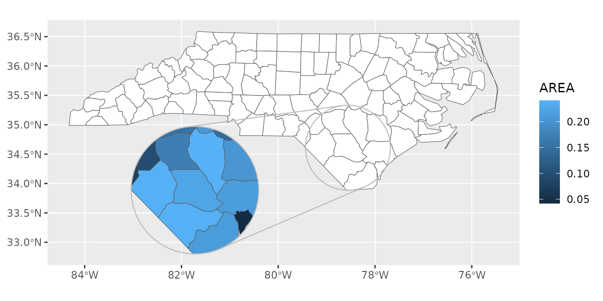
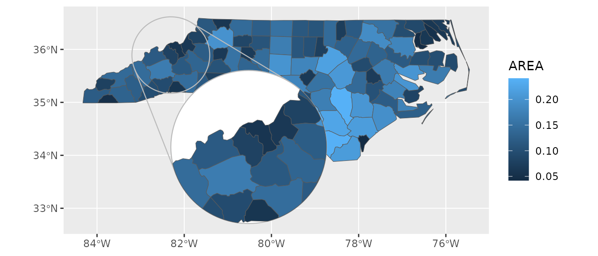

library(ggmapinset)
#> Loading required package: sf
#> Linking to GEOS 3.10.2, GDAL 3.4.1, PROJ 8.2.1; sf_use_s2() is TRUE
library(ggplot2)
library(sf)
nc <- sf::st_read(system.file("shape/nc.shp", package = "sf"), quiet = TRUE)This article provides some recipes for working with insets.
Different aesthetics for inset layer
By default, geom_sf_inset() creates two copies of the
map layer: one for the base map and the other for the inset. The inset
is transformed and cropped, but uses the same underlying aesthetics
mapping and parameters.
If you want to have different aesthetics for the two layers, you’ll
need to turn off this copying with inset_copy = FALSE. With
this parameter set and an inset parameter provided, only
the inset layer will be drawn. To draw only the base layer, you can use
inset_copy = FALSE with no inset, or simply
the normal geom_sf().
cfg <- configure_inset(centre = st_centroid(st_geometry(nc)[nc$NAME == "Bladen"]),
scale = 1.5, translation = c(-180, -50), radius = 50, units = "mi")
ggplot(nc) +
# this is equivalent to the following line:
# geom_sf_inset(fill = "white", inset_copy = FALSE) +
geom_sf(fill = "white") +
geom_sf_inset(aes(fill = AREA), inset = cfg, inset_copy = FALSE) +
geom_inset_frame(inset = cfg) +
coord_sf()
Inset frame backgrounds
If you’d like to add a background to the inset frame (perhaps because
it overlaps with part of the map), this can be done with the normal
aesthetics. The frame is composed of the two circles then the two lines
connecting them, so we want fill = c(NA, "white", NA, NA)
to fill just the large circle. Note that under some circumstances the
frame data will have different dimensions, due to facets (the frame is
repeated for each facet) or when the two circles are nested (in which
case the lines are not drawn).
We want the filled frame to sit in between the base map and the inset
layers, so we need to disable inset_copy.
cfg <- configure_inset(centre = st_centroid(st_geometry(nc)[nc$NAME == "Yancey"]),
scale = 2, translation = c(100, -120), radius = 50, units = "mi")
ggplot(nc) +
geom_sf(aes(fill = AREA)) +
geom_inset_frame(inset = cfg, fill = c(NA, "white", NA, NA)) +
geom_sf_inset(aes(fill = AREA), inset = cfg, inset_copy = FALSE) +
coord_sf()